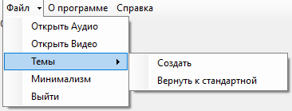

Справка по использованию приложения Медиа-плеер
Добро пожаловать на нашу веб-страницу! Здесь вы найдете необходимую информацию для использования сервиса, желаем приятного использования нашего продукта!
Как начать:
Для начала использования, выполните следующие шаги:
- Откройте необходимый вам файл видео или музыку
- После загрузки справа будет загружен или загружены несколько файлов
- Кликните два раза по вашему файлу для запуска исходного файла
- Наслаждайтесь прослушиванием / просмотром вашего медиа-контента
Основные компоненты используемые в программе:
Файл и его содержимое состоящие из:

- Открыть аудио предназначенное для открытия разного Аудио-контента
- Открыть видео предназначена для открытия разного Видео-контента
- Темы которое содержит дополнительно "Создать" для создания темы пользователем и так же "Вернуть к исходной" если пользователю не понравился интерфейс
- Минимализм - убирает лишний функционал для более удобного просмотра, к примеру видео
- Выход как ни странно закрывает программу, но она запросит точно ли вы хотите выйти с программы
О программе:
- Открывает файл, который показывает информацию о приложении
Справка
- Открывает этот документ:)
Панель управления и его содержащие кнопки:

- Играть - воспроизводить ваш файл
- Пауза - приостанавливает воспроизведение
- Стоп - полностью останавливает воспроизведение
- Громкость - позволяет переключать методом перемещения громкость воспроизведения
Поддержка:
Если у вас возникли вопросы или проблемы, обратитесь в нашу службу поддержки:
- Email: david.chuev.12@mail.ru
Спасибо за использование нашего продукта